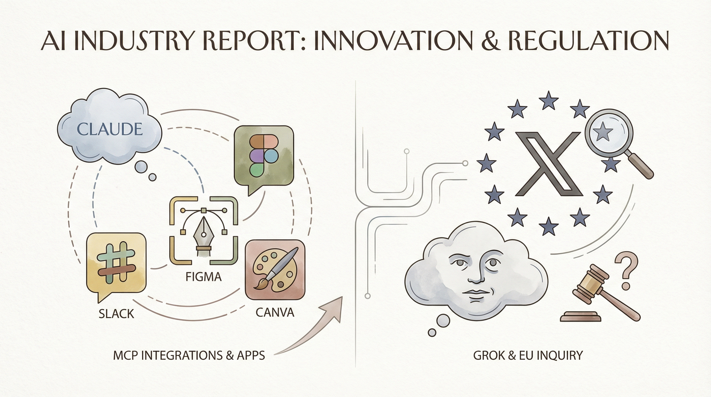

谷歌照片更新，支持通过文字描述生成视频。
两克伴AIGC日报
2026-01-27 星期二

本期关注：谷歌照片现在允许您描述如何将图片转换为视频、Instagram、Facebook和WhatsApp将测试高级订阅服务、高通支持SpotDraft扩大设备端合同AI规模，估值翻倍至4亿美元。、PVH与OpenAI共同重塑时尚未来
📰 行业动态
Meta计划为Instagram、Facebook和WhatsApp推出付费订阅服务。
高通支持SpotDraft，其AI工具年处理合同量增长173%。
PVH Corp.与OpenAI合作，将ChatGPT Enterprise应用于时尚设计等领域。
Indeed利用AI优化招聘和人才获取流程。
🔥 今日焦点
《Unlocking Agentic RL Training for GPT-OSS: A Practical Retrospective》一文深入探讨了针对GPT-OSS的代理强化学习（Agentic RL）训练方法。文章核心内容在于回顾了Agentic RL在GPT-OSS训练中的应用，并提出了改进策略，旨在提升模型性能和泛化能力。
这一研究之所以重要，是因为GPT-OSS作为一种强大的自然语言处理模型，在众多领域具有广泛的应用前景。然而，传统的训练方法往往难以充分发挥GPT-OSS的潜力。通过引入Agentic RL，研究者们成功地将强化学习与自然语言处理相结合，为GPT-OSS的训练提供了新的思路。
高效智能体的“幕后推手”究竟是谁？一篇由《机器之心》发布的综述文章深入探讨了这一议题。文章从记忆、工具学习和规划三个维度出发，全面分析了高效智能体背后的关键技术。这一研究对于理解智能体的学习与决策过程具有重要意义。
文章指出，记忆是智能体进行有效学习和决策的基础。通过优化记忆机制，智能体能够更好地存储和处理信息，从而提高学习效率。同时，工具学习作为智能体适应复杂环境的关键能力，其研究进展对于推动AI技术的发展至关重要。此外，规划能力使得智能体能够在面对不确定性时，制定出合理的行动策略。
Kimi K2.5，一款开源视觉智能体AI，在Agentic基准测试中取得了全球领先的成绩，HLE全套（50.2%）、BrowseComp（74.9%）均表现出色。此外，在视觉和编码领域，K2.5也达到了开源领域的顶尖水平，MMMU Pro（78.5%）、VideoMMMU（86.6%）、SWE-bench验证（76.8%）均领先同行。K2.5能够将聊天、图像和视频转化为具有表现力的动态网站，实现“Code with Taste”。
Kimi K2.5的Agent Swarm（Beta）功能，允许多个智能体并行工作，实现规模效应。最多可支持100个子智能体，1500次工具调用，相比单智能体设置，速度提升4.5倍。K2.5现已上线，提供聊天模式和智能体模式，同时，K2.5 Agent Swarm Beta版面向高级用户开放。
📚 深度长文
《跨境电商版Sora发布：全球首个AI原生电商视频Multi-Agent来了》一文由机器之心撰写，深入探讨了全球首个AI原生电商视频Multi-Agent的发布，标志着跨境电商领域的技术革新。文章核心观点在于，Sora平台的推出，通过引入Multi-Agent技术，实现了电商视频的智能化处理，为跨境电商提供了全新的解决方案。
关键论据包括：Sora平台利用AI技术，实现了视频内容的自动生成、编辑和优化，大幅提升了电商视频的生产效率；Multi-Agent技术则通过模拟人类购物行为，为用户提供个性化的购物体验，增强了用户粘性。此外，文章还分析了Sora平台在降低成本、提升用户体验方面的优势。
《The Download：OpenAI的科学发展计划与聊天机器人年龄验证》一文深入探讨了OpenAI在科学领域的宏伟蓝图以及聊天机器人年龄验证的挑战。文章指出，自ChatGPT惊艳亮相以来，OpenAI的技术已颠覆了家庭、工作和生活中的众多日常活动。文章详细剖析了OpenAI在科学领域的战略布局，揭示了其在人工智能领域的独特见解和创新思维。同时，文章也关注了聊天机器人年龄验证这一重要议题，探讨了其在保障用户权益、维护网络环境方面的必要性。对于AI从业者而言，本文不仅提供了丰富的行业资讯，还启发了对人工智能未来发展的深入思考。
📄 重点论文
**核心贡献**: 提出了一种动态角色分配框架，用于多智能体辩论系统，通过元辩论选择合适的智能体角色，提高了辩论系统的性能。
**与AI Agent的关联**: 为多智能体系统中的角色分配和协作提供了新的方法，有助于提高智能体在复杂任务中的表现。
**核心贡献**: 提出了一种在受限通信条件下的多智能体深度强化学习方法，通过减少对全局状态信息的依赖，提高了多智能体强化学习的可扩展性和鲁棒性。
**与AI Agent的关联**: 为多智能体系统在复杂环境中的通信和协作提供了新的解决方案，有助于提高智能体在现实世界中的应用能力。
🛠️ 产品推荐
MWP（Machine Web Protocol）是一款开放规范，旨在为网站内容提供机器可读版本。它解决了当前大部分网络内容对AI不可见的问题，如被robots.txt阻止、隐藏在JavaScript后或被HTML噪声淹没。MWP通过简洁的文本格式和元数据头部，让内容在/machine/路径下以机器可读形式呈现。该规范采用Apache 2.0协议，旨在提升网站内容在AI检索中的可见度，为用户提供更便捷的AI交互体验。
---
Claude Code Setup是一款专注于代码开发的工具，它通过提供持久的上下文和一致的代码环境，实现单一工作流程。该产品旨在解决开发者在使用不同平台或项目时，代码上下文丢失、工作流程繁琐等问题。通过其独特的AI能力，Claude Code Setup能够智能地追踪和同步代码上下文，提高开发效率，降低出错率。对于技术从业者而言，这款产品无疑将极大提升他们的工作效率和开发体验。